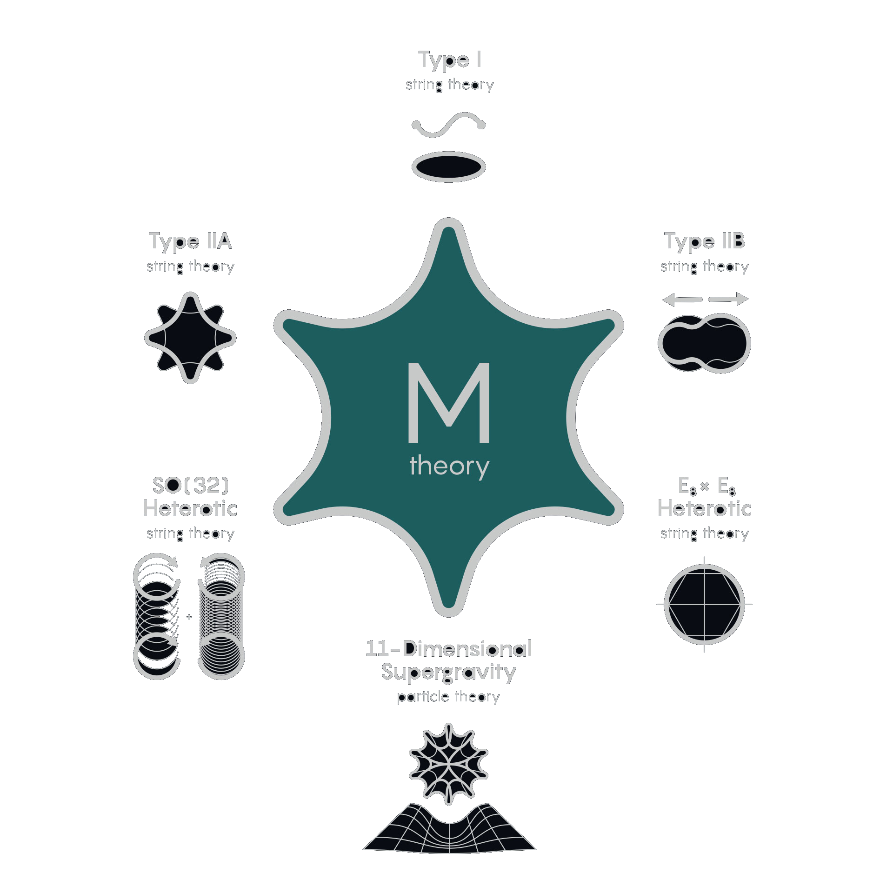

DISTANT WORLDS
 The Universe of Distant Worlds
The Universe of Distant Worlds

The Standard Model
The Standard Model of Particle Physics brings together all elementary particles of universe together which make up our world. Elementary particles are fundamental elements at the base of our universe, they are the smallest particles the cannot be broken down or divided.
Standard model divides the particles in different groups. The universe is made up of matter. Matter is fundamental to living organism, planets, and anything you can see and has a mass. The Elementary particles that make up matter are called FERMIONS
there is 2 main category of Fermions. Quarks and Leptons
All Leptons and Quarks exist under 3 forms which are called Generations
To each generation there is pair of Quarks and Leptons
First Generation are Up and Down Quarks and Electron Electron Neutrino Leptons
When they bind together in groups of three quarks form Protons and Neutrons which are essential components of atom nucleus, Electrons orbit the protons and neutrons, their negative charge cancel out positive charge of protons to that matter remain neutral, by traveling in Electric wire Electrons are also responsible for electricity, Electron Neutrinos are matter particles most numerous in the universe. Over 1 billion go over our body in a second, they have property that they do not interact with other matter, making their detection challenging
Second generation consist of Charm and Strange quarks, Muon and Muon neutrino leptons. Those have mass greater than first generation particles
Third generation consist of Top and Bottom quarks, Tau and Tau neutrino leptons
Most massive particles yet, Second and Third generation particles are very rare in universe compared to first generation which universe mostly consist of
All matter paticles also exist in either 2 versions, what we call AntiMatter
Each Particle associates an Anti-Particle. Anti particle has same characteristics but their electric charge is opposite
Second group of particles are called Bosons. Boson is a particle which will act as a force messenger on a distance.
Four of these Bosons are called Gauge bosons. Each represent a force in Universe, The photon is associated with Electromagnetic force, it moves at the speed of light and is responsible for electromagnetic interactions and light itself
Gluon is resppnsible for Strong radioactive interaction, this force plays at microscopic size and very strong, it binds together quarks which then bind neutrons and protons together into nucleus
\( Z^0 \) , \( W^+ \) , \( W^- \) are gauge bosons responsible fot weak radioactive interaction. This force underlies phenomenas like radioactivity of particles or nuclear fusion of particles
Higgs Boson, does not represent a force but a field, When a particle passes through this field, it borrows from the higgs field which creates a drag, slowing down the particle, as if it was given a mass, the greater particle interact the greater their mass is. Unfortunately Standard model doesnt explain phenomena of Gravity.

SuperSymmetry
Symmetry is a transformation that does not affect a object
Identifying symmetries of an ovject helps understand its geometric structure.
Our universe has symmetries too, the laws of nature do not change from one point to another, For Example The universe is symmetric under translations, if we carry an experiment in one direction the result is the same in another direction, the universe is symmetric under rotation.
Supersymmetry postulates that the standard model was incomplete, and that there are other particles missing out, Each standard particle would have superpartner in the other category, Such that there would be a new boson for each fermion, and new fermion for each boson
Electrons, Quarks, Neutrons would each have a boson superpartner, Selectron, Squark, Sneutrino
While Bosons, Photon, Gluon, Z, W, Higgs, would each have a fermion partner
Gluino, Photino, Zino, Wino, Higgsinos
Supersymmetry is a symmetry between particles of matter and interaction
During the Big Bang, The Electromagnetism, Strong and Weak nuclear interactions were merged together, nowadays these interactions have different intensities, rewinding time back to the instance of big bang, the three forces must unite, this is grand unification, theory leading to Theory of Everything
With Standard model calculations, it indicates that the curves miss each other, adding supersymmetry the calculations now predict that curves all meet.
Our universe is described as a block of underlying fabric, called Spacetime, Spacetime follows Poincaré symmetries -> From point to point, Orientation to Orientation, Moment to Moment and from innertial frame to another.
These are symmetries of Special Relativity. Particles are explained as fluctuations in quantum fields, Each particle has its own quantum field, the quantum fields also have symmetries within them. Quantum fields are mathematical fluids which fill all of Space, Higgs field is made up of numbers, Boson fields is made of Vectors, and Fermion field is made up of Spinors, These three fields are distinguished by propery called Spin, Spin 0 and 1 for bosons, and 1/2 for Fermions.
To understand core of supersymmetry we must understand the technical side
Boson quantum fields are described by Numbers or Vectors of Numbers,
In world of Numbers multipliation is commutative, if we take 3x5 = 15, so does 5x3
in more general X x Y = Y x X
However Spinors are made up of Complex Numbers, Those are abstract mathematical tool Ψ A x Ψ B = - Ψ B x Ψ A , Complex numbers are Anti Commutative, In consequence, \( \Psi^2 \) is always 0.
We can multiply same ordinary number by itself, which indicates that two identical bosons can be in same state simultanrously, but we cant do same with two fermions becouse its impossible to multiply Ψ by itself it always gives 0, this is Pauli exclusion zone, this is why we do not fall through matter, electrons cannot pass through each other.
Lets come back to Symmetries, as mentioned above Quantum fields also have symmetries, Quark field come in symmetry of three, Red, Blue and Green which are interchangeable, this is internal symmetry within quark fields or another example of charged particles, such as electrons, are invariant when we alter phase of complex numbers. In 1961 Coleman and Mandula Mathematically prove that any other symmetries cannot be followed, Only allowed ones are the ones of Poincaré, Internal symmetries within Quantum Fields which are expressed by Ordinary numbers and Supersymmetry which is explained by Complex Numbers
Super partners are necessary very massive compared to normal particles, Detection of them require higher energy requirement \( E = MC^2 \)
In Minimal Supersymmetric Standard Model, Charginos are fermionic superpartners of charged Higgs and W bosons, forming two mass eigenstates \( \chi_1^{\pm}, \chi_2^{\pm} \). Neutralinos are fermionic superpartners of neutral Higgs, Wino, and Bino bosons, forming four mass eigenstates. Quark and lepton doublets in MSSM refer to pairs of quarks and leptons and their superpartners, central to MSSM's extension beyond the Standard Model, aiming to resolve its theoretical limitations
M Theory
“So what I said so far doesn’t guarantee anything about the existence of a limit when Newton’s constant is actually infinity but nevertheless, that limit may exist.
If that limit exist, the limiting theory is a theory in 11 dimensions. It’ll be a supersymmetric relativistic theory in 11 dimensions, with 11 dimensional supergravity as it’s low energy limit and depending on no dimensionless parameters. Does it exist? I have no idea. All I’m saying is that, While in the past I would bet against it, I shall place no such bet today” - Edward Witten, 1995
At present we can describe our universe with two theories, General Relativity, which models Gravity through Curved SpaceTime at large scale, and Standard model of particles which unifies all other interactions through quantum fields whose vibrations can be interpreted as particles.
Both make use of concept of Fields, Curvature of Spacetime field, and Quantum fields, But while General Relativity is a classical mechanics, it predicts precise motion over time, Standard model is quantum, its description consist of probabilities and superpositions. These two theories describe compeltely different worlds. Disturbance of Curvature of Spacetime is described as Fluctuations in Quantum Fields called «Gravtions» but zooming past below the Planck lenght, the calculations no longer work, at this fundamental gravity seems incompatble with quantum world.
As mentioned before, our spacetime has four symmetries, but adding Supersymmetry, we get SuperGravity, Supergravity is very similar to Relativity
Space time can bend, Generate structures and have black holes without dimension forming singularities. Supergravity was also studied in hypothetical Higher Dimensions which then generalised Black Holes with one, two or more dimensions which form extended objects which are called Membranes, or Branes.
These can have a mass, a charge and be supersymmetric, but once again zooming beyond planck lenght the calculations break down.
In the Standard Model the particles are presented as dimensionless points,a revolutionary model revealed that these point like particles are only approximation, and on more fundamental scale the particles are made up of Vibrating strand of Energy called Strings. As the more polished model also uses Supersymmetry, its called Superstrings. When strings meet each other, they can interact, Merge or Divide and like guitar strings they have different modes of vibrations which behave on our scale as different particles, Discovery showed that one of these modes of vibration behaves exacly like the Graviton.

Model is promising but set several restrictions on Universe, It imposes that Spacetime had not 4 but 10 Dimensions, 6 additional Spacial Dimensions that werent observed yet.
If we decide to study open strings, Little Strans, there can collapse on themselves and we must also study little Loops, Taking into account these restrictions, superstrings theory only allows for 5 universes models to exist
Type 1 -> which contains both Open and Closed Strings
Types IIA & IIB -> Containing only Closed Strings
Heterotic SO(32) & E8xE8 -> Closed Strings with different type of vibrations moving in Opposite Directions, Attempt to Unify Bosonic and Superstrings together
On a large scale, both Superstrings and SuperGravity explain supersymmetric Universe with Gravity, In fact, when supergracity applied in 10 dimensions, turns out to be approximation of Superstring theory universe. This implies that Branes of supergravity exist in world of suprestrings, Strings are precisely one of the possible branes with 1 dimension, There also D-Brane on which open strings can end on, or NS5 brane in 5 dimensions. Supergravity maximum accepts only 11 Dimensions, One more than in Superstrings. In this 11 Dimensional Universe all constant of universe will be fixed by Mathematics, Supergravity proposes new standalone approximation of universe with 11 Dimensions.
In 1990's Ancestral relative of Professor Harrison Wells, Edward Witten discovered relations between 5 universes of Superstrings and 11 Dimensional SuperGravity. Dualities.
11 Dimensional Supergravity contains Branes with 2 Dimensions, Imagine now we transform one of the dimensions into a Circle then reduce it until its no longer visible. After this compactifying Supergravity lost 1 dimensions, and it became a String. Un surprising results the new model behaves like the Type IIA model of superstrings. Before discovering Dualities, Scientists only could study weakly interacting strings using Poturbative approach, once the interactions became strongs, the calculations were getting too large, they cannot refine the result and even infinite amount would not allow to describe certain phenomenas
However, If we regrow back the 11th Dimensions, This time we explain strongly interacting strings of IIA Universe!, We need 11th Dimension for that.
Or, if we compactify the 11th Dimension into alligned Segment, rather than a circle, We obtain description of the E8xE8 Model, Which also allows to probe the strongly interacting strings of the heterotic model. Little by Little researchers discover other dualities.
For Example. Taking IIA and IIB models and Compactifying each in a circle, One large and the other small. We obtain models which explain same universe in different ways. Each quantity in one is related to another quantity in the other model. For example the speed of a moving speed in compact dimension is related to the amount of times it wraps around that dimension in other description this T duality also connects the two heterotic models together. S duality explains when strings interact Strongly on one model and weakly in the other. S Duality connects 11D With Type IIA, SO(32) With Type 1 and 11D with E8xE8 and more interestingly the IIB model with itself, when we invert the strenght of the interaction, the branes contained in the theory converge back into each other that we recover the original model. These dualities allows tideous calculations in one model into simpler in other models.

The Entropy of Black Holes, the amount of information they contain, can be calculated by amount of strings attached to it, the results are in perfect agreement with Hawking radiation formulas.
This research also led to discovery of AdS/CFT correspondence which states as certain universes can be explained as holograms of their surface
In 1995 Edward Witten proposed that 11 Dimensional SuperGravity and 5 models of SuperStrings are only approximation of more, generalised model of universe where these models complement each other, called M Theory.
M Theory describes 11 Dimensional SuperSymmetric world containing Branes but at the fundamental level it still formalism remained mystery
M Theory was still hardly proven by Experimentations due to technological and lack of mathematical formulas
M Theory remained as elegant description unifying Gravity and Standard Model without need to include Graviton into the Standard Model
In Late 22th Century, in Year 2176, During Deep Survey of Solar System Planets, on Venus underground soil was discovered unidentified object, Made of technology never seen before or in anyway resemble human made one. 20 years into the Study, Prominent Engineer and Scientist Mark William Cooper, Understood of Mathematics of a Engine that the ship had installed, The Mathematics allowed to complete the missing puzzle of M Theory, which is now called Mandlebrot Universe. It solidified concept of 11 Dimensional Universe containing Branes, with SuperSymmetric Self-Similar Fractal Structure, with each Dimension connected with Anti-De-Sitter warping. United Nations immediatly took advantage of new mathematics to create «Anti-De-Sitter Drive» based on mathematics of the engine and our new understanding of the universe to open doors for humanity to the stars. Mark Cooper became most respected and honored person, earning new medal invented by Scientific Assembly «God“s Sent gift to Humanity»